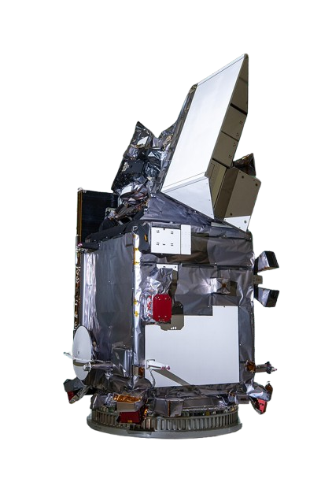

Pace Mission Goals
Primary Goals:
Extend Key Data Records
PACE continues to gather long-term data on ocean color, aerosols, and clouds, which are critical for understanding climate change and the Earth's ecosystems. This ensures that scientists have consistent, reliable data for ongoing studies of Earth's systems.
Support Climate and Ecosystem Research
PACE nvestigates how the oceans and the atmosphere interact with ecosystems through the use of advanced instruments, thus addressing unresolved scientific issues. This enhances studies on climate dynamics, health of the oceans as well as the processes in the atmosphere.

Specific Objectives:
Ocean Health Monitoring
PACE tracks changes in ocean color and phytoplankton populations, helping scientists monitor marine ecosystems and detect harmful algal blooms.
Air Quality and Aerosol Study
By measuring aerosols and clouds, PACE improves understanding of how airborne particles affect weather, climate, and air quality, including their impact on human health and ecosystems.
Carbon Cycle Tracking
PACE contributes to studying the Earth's carbon cycle by observing how oceans absorb carbon dioxide and how climate change affects marine ecosystems.
Impace on society:
Environmental and Economic Benefits
PACE’s data helps industries reliant on water quality and fisheries make informed decisions. The mission supports better management of natural resources and strengthens food security by monitoring ocean health.
Joke:
What did the ocean say to the beach?
Nothing, it just waved!